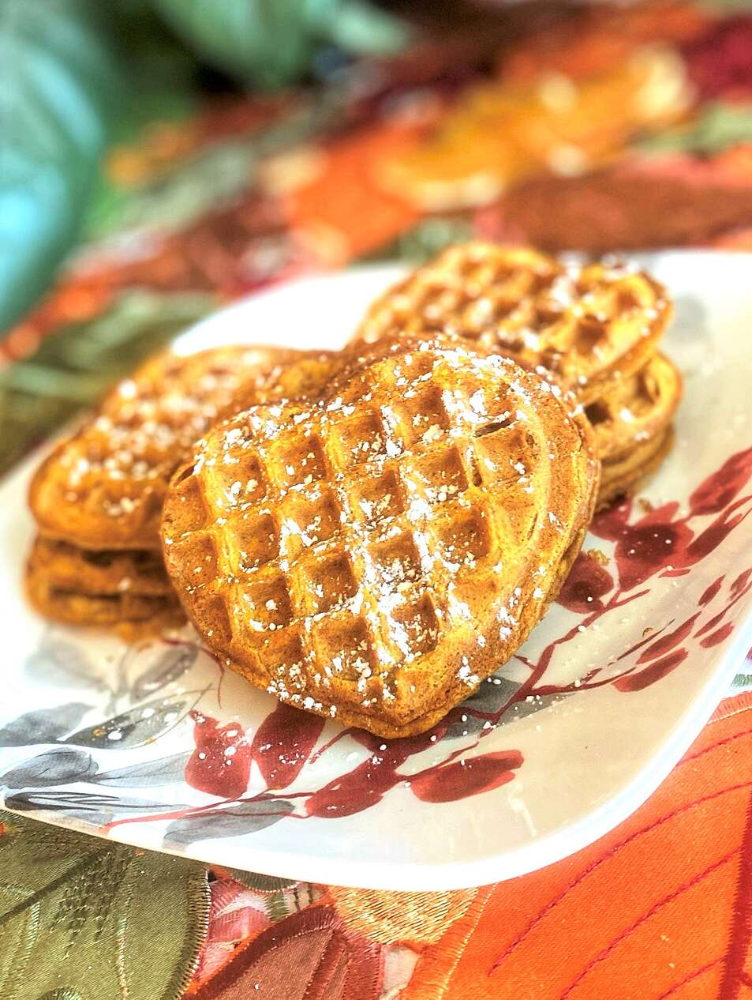

Vegan Pumpkin Waffles

Top with powdered sugar, vegan butter, and/or syrup.
Ingredients
- 1 cup almond milk
- ½ cup pumpkin puree
- 2 tablespoons white sugar
- 2 tablespoons canola oil
- 1 teaspoon vanilla extract
- 1 cup all-purpose flour
- 2 teaspoons pumpkin pie spice
- 1 teaspoon baking powder
- ¼ teaspoon salt
- ¼ teaspoon baking soda
- 1 pinch ground nutmeg
Steps
- Combine almond milk, pumpkin puree, sugar, oil, and vanilla extract in a bowl. Add flour, pumpkin pie spice, baking powder, salt, baking soda, and nutmeg. Stir until well combined.
- Preheat a 4-inch mini waffle iron according to manufacturer's instructions. Pour in about 2 tablespoons batter per waffle and cook until golden brown, about 5 minutes.